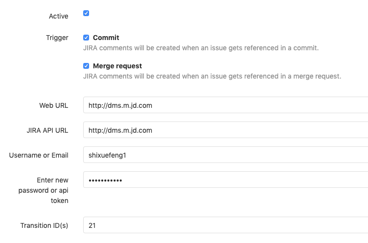

- 00 开篇词 从默默无闻到风靡全球，DevOps究竟有什么魔力？.md.html
- 01 DevOps的“定义”：DevOps究竟要解决什么问题？.md.html
- 02 DevOps的价值：数字化转型时代，DevOps是必选项？.md.html
- 03 DevOps的实施：到底是工具先行还是文化先行？.md.html
- 04 DevOps的衡量：你是否找到了DevOps的实施路线图？.md.html
- 05 价值流分析：关于DevOps转型，我们应该从何处入手？.md.html
- 06 转型之路：企业实施DevOps的常见路径和问题.md.html
- 07 业务敏捷：帮助DevOps快速落地的源动力.md.html
- 08 精益看板（上）：精益驱动的敏捷开发方法.md.html
- 09 精益看板（下）：精益驱动的敏捷开发方法.md.html
- 10 配置管理：最容易被忽视的DevOps工程实践基础.md.html
- 11 分支策略：让研发高效协作的关键要素.md.html
- 12 持续集成：你说的CI和我说的CI是一回事吗？.md.html
- 13 自动化测试：DevOps的阿克琉斯之踵.md.html
- 14 内建质量：丰田和亚马逊给我们的启示.md.html
- 15 技术债务：那些不可忽视的潜在问题.md.html
- 16 环境管理：一切皆代码是一种什么样的体验？.md.html
- 17 部署管理：低风险的部署发布策略.md.html
- 18 混沌工程：软件领域的反脆弱.md.html
- 19 正向度量：如何建立完整的DevOps度量体系？.md.html
- 20 持续改进：PDCA体系和持续改进的意义.md.html
- 21 开源还是自研：企业DevOps平台建设的三个阶段.md.html
- 22 产品设计之道：DevOps产品设计的五个层次.md.html
- 23 持续交付平台：现代流水线必备的十大特征（上）.md.html
- 24 持续交付平台：现代流水线必备的十大特征（下）.md.html
- 25 让数据说话：如何建设企业级数据度量平台？.md.html
- 26 平台产品研发：三个月完成千人规模的产品要怎么做？.md.html
- 27 巨人的肩膀：那些你不能忽视的开源工具.md.html
- 28 迈向云端：云原生应用时代的平台思考.md.html
- 29 向前一步：万人规模企业的DevOps实战转型案例（上）.md.html
- 30 向前一步：万人规模企业的DevOps实战转型案例（下）.md.html
- 期中总结 3个典型问题答疑及如何高效学习 (1).md.html
- 期中总结 3个典型问题答疑及如何高效学习.md.html
- 期末总结 在云时代，如何选择一款合适的流水线工具？.md.html
- 特别放送（一）成为DevOps工程师的必备技能（上）.md.html
- 特别放送（三）学习DevOps不得不了解的经典资料.md.html
- 特别放送（二）成为DevOps工程师的必备技能（下）.md.html
- 特别放送（五）关于DevOps组织和文化的那些趣事儿.md.html
- 特别放送（四）Jenkins产品经理是如何设计产品的？.md.html
- 结束语 持续改进，成就非凡！.md.html
- 捐赠
27 巨人的肩膀：那些你不能忽视的开源工具
你好，我是石雪峰。
自研工具平台对公司来说是一件高成本和高投入的事情，对于技术人员的要求也非常高。很少有公司能够像BAT一样投入近百人的团队来开发内部系统工具，毕竟，如果没有这么大规模的团队，平台产生的收益也比较有限。
另外，也很少有公司像一些行业头部公司一样，会直接投入大量资金购买成熟的商业化工具或者通过乙方合作的方式联合共建。
这些方法的长期投入都比较大，不太适用于中小型企业。那么，有其他可以低成本、快速见效的解决方案吗？
实际上，现在的开源工具已经非常成熟了，只要稍加熟悉，就能快速地基于开源工具搭建一整套研发交付工具链平台。
几年前，我跟几个朋友利用业余时间就搭建了这样一套开源的端到端流水线解决方案。我依稀记得，这个解决方案架构图是在北京开往上海的高铁上完成的。目前，这个方案在行业内广为流传，成为了很多公司搭建自己内部工具链平台的参考资料。这个系统的架构图如下：
今天，我会基于这个解决方案，给你介绍一下研发代码提交阶段、集成测试阶段和部署发布阶段的工具使用技巧，工具选型以主流开源解决方案为主，商业工具为辅，涵盖了Jira、GitLab、Jenkins、SonarQube和Kubernetes等，希望可以手把手地帮助你快速搭建一套完整的持续交付平台。
对于持续交付工具链体系来说，工具的连通性是核心要素，所以我不会花太多时间介绍工具应该如何搭建，毕竟这类资料有很多，或者，你参考一下官网的搭建文档就可以了。尤其是现在很多工具都提供了容器化的部署方式，进一步简化了自身工具的建设成本。
需求管理 - Jira
在Jira官网上的醒目位置，写着一句话：敏捷开发工具的第一选择。在我看来，Atlassian公司的确有这个底气，因为Jira确实足够优秀，跟Confluence的组合几乎已经成为了很多企业的标配。这也是为什么我没有选择开源工具Redmine或者其他诸如Teambition等的SaaS化服务。
当然，近些年来，各大厂商也在积极地对外输出研发工具能力，以腾讯的TAPD为代表的敏捷协同开发工具，就使用得非常广泛。但是，其实产品的思路都大同小异，搞定了Jira，其他工具基本也就不在话下了。
作为敏捷协同工具，Jira新建工程可以选择团队的研发模式是基于Scrum，还是看板方法，你可以按需选择。在专栏的第8讲和第9讲中，我给你介绍了精益看板，你完全可以在Jira中定制自己团队的可视化看板。
看板的配置过程并不复杂，我把它整理成了文档，你可以点击网盘链接获取，提取码是mrtd。需要提醒你的一点是：别忘了添加WIP在制品约束，别让你的精益看板变成了可视化看板。
需求作为一切开发工作的起点，是贯穿整个研发工作的重要抓手。对于Jira来说，重点是要实现跟版本控制系统和开发者工具的打通。接下来，我们分别来看下应该如何实现。
如果你也在使用特性分支开发模式，你应该知道，一个特性就对应到一个Jira中的任务。通过任务来创建特性分支，并且将所有分支上的提交绑定到具体任务上，从而建立清晰的特性代码关联。我给你推荐两种实现方式。
第一种方式是基于Jira提供的原生插件，比如 Git Integration for Jira。这个插件配置起来非常简单，你只需要添加版本控制系统的地址和认证方式即可。然后，你就可以在Jira上进行查看提交信息、对比差异、创建分支和MR等操作。但是这个插件属于收费版本，你可以免费使用30天，到期更新即可。
第二种方式，就是使用Jira和GitLab的Webhook进行打通。
首先，你要在GitLab项目的“设置 - 集成”中找到Jira选项，按下图添加相应配置即可。配置完成之后，你只需要在提交注释中添加一个Jira的任务ID，就可以实现Jira任务和代码提交的关联，这些关联体现在Jira任务的Issue links部分。
另外，你也可以实现Jira任务的状态自动流转操作，无需手动移动任务卡片。我给你提供一份 配置说明 ，你可以参考一下。

不过，如果只是这样的话，还不能实现根据Jira任务来自动创建分支，所以接下来，还要进行Jira的Webhook配置。在Jira的系统管理界面中，你可以找到“高级设置 - Webhook”选项，添加Webhook后，可以绑定各种系统提供的事件，比如创建任务、更新任务等，这基本可以满足绝大多数场景的需求。
假设我们的系统在创建Jira任务的时候，要自动在GitLab中基于主线创建一条分支，那么你可以将GitLab提供的创建分支API写在Jira触发的Webhook地址中。参考样例如下：
https : //这里替换成你的GitLab服务地址/repository/branches?branch=${issue.key}&ref=master&private_token=[这里替换成你的账号Token]

到这里，Jira和GitLab的打通就完成了。我们来总结下已经实现的功能：
- GitLab每次代码变更状态都会同步到Jira任务中，并且实现了Jira任务和代码的自动关联（Issue links）；
- 可以在MR中增加关键字 Fixes/Resolves/Closes Jira任务号，实现Jira的自动状态流转；
- 每次在Jira中创建任务时，都会自动创建特性分支。
关于Jira和开发者工具的打通，我把操作步骤也分享给你。你可以点击网盘链接获取，提取码是kf3t。现在很多工具平台的建设都是以服务开发者为导向的，所以距离开发者最近的IDE工具就成了新的效率提升阵地，包括云IDE、IDE插件等，都是为了方便开发者可以在IDE里面完成所有的日常任务，对于管理分支和Jira任务，自然也不在话下。
代码管理 - GitLab
这个示例项目中的开发流程是怎样的呢？我们一起来看下。
第1步：在需求管理平台创建任务，这个任务一般都是可以交付的特性。你还记得吗？通过前面的步骤，我们已经实现了自动创建特性分支。
第2步：开发者在特性分支上进行开发和本地自测，在开发完成后，再将代码推送到特性分支，并触发提交阶段的流水线。这条流水线主要用于快速验证提交代码的基本质量。
第3步：当提交阶段流水线通过之后，开发者创建合并请求（Merge Request），申请将特性分支合并到主干代码中。
第4步：代码评审者对合并请求进行Review，发现问题的话，就在合并请求中指出来，最终接受合并请求，并将特性代码合入主干。
第5步：代码合入主干后，立即触发集成阶段流水线。这个阶段的检查任务更加丰富，测试人员可以手动完成测试环境部署，并验证新功能。
第6步：特性经历了测试环境、预发布环境，并通过部署流水线最终部署到生产环境中。
在专栏的第12讲中，我提到过，持续集成的理念是通过尽早和及时的代码集成，从而建立代码质量的快速反馈环。所以，版本控制系统和持续集成系统也需要双向打通。
这里的双向打通是指版本控制系统可以触发持续集成系统，持续集成的结果也需要返回给版本控制系统。
接下来，我们看看具体怎么实现。
代码提交触发持续集成
首先，你需要在Jenkins中安装GitLab插件。这个插件提供了很多GitLab环境变量，用于获取GitLab的信息，比如，gitlabSourceBranch这个参数就非常有用，它可以提取本次触发的Webhook的分支信息。毕竟，这个信息只有GitLab知道。只有同步给Jenkins，才能拉取正确的分支代码执行持续集成过程。
当GitLab监听到代码变更的事件后，会自动调用这个插件提供的Webhook地址，并实现解析Webhook数据和触发Jenkins任务的功能。
其实，我们在自研流水线平台的时候，也可以参考这个思路：通过后台调用GitLab的API完成Webhook的自动注册，从而实现对代码变更事件的监听和任务的自动化执行。
当GitLab插件安装完成后，你可以在Jenkins任务的Build Triggers中发现一个新的选项，勾选这个选项，就可以激活GitLab自动触发配置。其中比较重要的两个信息，我在下面的图片中用红色方块圈出来了。
- 上面的链接就是Webhook地址，每个Jenkins任务都不相同；
- 下面的是这个Webhook对应的认证Token。
你需要把这两个信息一起添加到GitLab的集成配置中。打开GitLab仓库的“设置-集成”选项，可以看到GitLab的Webhook配置页面，将Jenkins插件生成的地址和Token信息复制到配置选项中，并勾选对应的触发选项。
GitLab默认提供了多种触发选项，在下面的截图中，只勾选了Push事件，也就是只有监听到Git Push动作的时候,才会触发Webhook。当然，你可以配置监听的分支信息，只针对特性分支执行关联的Jenkins任务。在GitLab中配置完成后，可以看到新添加的Webhook信息，点击“测试”验证是否可以正常执行，如果一切正常，则会提示“200-OK”。
持续集成更新代码状态
打开Jenkins的系统管理页面，找到GitLab配置，添加GitLab服务器的地址和认证方式。注意，这里的Credentials要选择GitLab API Token类型，对应的Token可以在GitLab的“用户 - 设置 - Access Tokens”中生成。由于Token的特殊性，只有在生成的时候可见，以后就再也看不到了。所以，在生成Token以后，你需要妥善地保存这个信息。
-

那么，配置完成后，要如何更新GitLab的提交状态呢？这就需要用到插件提供的更新构建结果命令了。
对于自由风格类型的Jenkins任务，你可以添加构建后处理步骤 - Publish build status to GitLab，它会自动将排队的任务更新为“Pending”，运行的任务更新为“Running”，完成的任务根据结果更新为“Success”或者是“Failed”。
对于使用流水线的任务来说，官方也提供了相应的示例代码，你只需要对照着写在Jenkinsfile里面就可以了。
updateGitlabCommitStatus name: 'build', state: 'success'
这样一来，每次提交代码触发的流水线结果也会显示在GitLab的提交状态中，可以在查看合并请求时作为参考。有的公司更加直接：如果流水线的状态不是成功状态，那么就会自动关闭提交的合并请求。其实无论采用哪种方式，初衷都是希望开发者在第一时间修复持续集成的问题。
我们再阶段性地总结一下已经实现的功能：
- 每次GitLab上的代码提交都可以通过Webhook触发对应的Jenkins任务。具体触发哪个任务，取决于你将哪个Jenkins任务的地址添加到了GitLab的Webhook配置中；
- 每次Jenkins任务执行完毕后，会将执行结果写到GitLab的提交记录中。你可以查看执行状态，决定是否接受合并请求。
代码质量 - SonarQube
SonarQube作为一个常见的开源代码质量平台，可以用来实现静态代码扫描，发现代码中的缺陷和漏洞，还提供了比较基础的安全检查能力。除此之外，它还能收集单元测试的覆盖率、代码重复率等。
对于刚开始关注代码质量和技术债务的公司来说，是一个比较容易上手的选择。关于技术债务，在专栏的第15讲中有深入讲解，如果你不记得了，别忘记回去复习一下。
那么，代码质量检查这类频繁执行的例行工作，也比较适合自动化完成，最佳途径就是集成到流水线中，也就是需要跟Jenkins进行打通。我稍微介绍一下执行的逻辑，希望可以帮你更好地理解这个配置的过程。
SonarQube平台实际包含两个部分：
- 一个是平台端，用于收集和展示代码质量数据，这也是我们比较常用的功能。
- 另外一个是客户端，也就是SonarQube的Scanner工具。这个工具是在客户端本地执行的，也就是跟代码在一个环境中，用于真正地执行分析、收集和上报数据。这个工具之所以不是特别引人注意，是因为在Jenkins中，后台配置了这个工具，如果发现节点上没有找到工具，它就会自动下载。你可以在Jenkins的全局工具配置中找到它。
了解了代码质量扫描的执行逻辑之后，我们就可以知道，对于SonarQube和Jenkins的集成，只需要单向进行即可。这也就是说，只要保证Jenkins的Scanner工具采集到的数据可以正确地上报到SonarQube平台端即可。
这个配置也非常简单，你只需要在Jenkins的全局设置中添加SonarQube的平台地址就行了。注意勾选第一个选项，保证SonarQube服务器的配置信息可以自动注入流水线的环境变量中。
在执行Jenkins任务的时候，同样可以针对自由风格的任务和流水线类型的任务，添加不同的上报方式。关于具体的内容，你可以参考SonarQube的官方网站，这里就不赘述了。
到此为止，我们已经实现了GitLab、Jenkins和SonarQube的打通。我给你分享一幅系统关系示意图，希望可以帮助你更好地了解系统打通的含义和实现过程。
环境管理 - Kubernetes
最后，我们再来看看环境管理部分。作为云原生时代的操作系统，Kubernetes已经成为了云时代容器编排的事实标准。对于DevOps工程师来说，Kubernetes属于必学必会的技能，这个趋势已经非常明显了。
在示例项目中，我们同样用到了Kubernetes作为基础环境，所有Jenkins任务的环境都通过Kubernetes来动态初始化生成。
这样做的好处非常多。一方面，可以实现环境的标准化。所有环境配置都是以代码的形式写在Dockerfile中的，实现了环境的统一可控。另一方面，环境的资源利用率大大提升，不再依托于宿主机自身的环境配置和资源大小，你只需要告诉Kubernetes需要多少资源，它就会帮助你找到合适的物理节点运行容器。资源的调度和分配统一通过Kubernetes完成，这就进一步提升了资源的有效利用率。想要初始化一套完整的环境，对于中小系统来说，是分分钟就可以完成的事情。关于这一点，我会在讲“云原生时代应用的平台建设”时跟你探讨。
那么，想要实现动态初始化环境，需要打通Jenkins和Kubernetes。好在Jenkins已经提供了官方的Kubernetes插件来完成这个功能。你可以在Jenkins系统配置中添加云 - Kubernetes，然后再参考下图进行配置。
需要注意的是，必须正确配置Jenkins的地址（系统配置 - Jenkins Location），否则会导致新建容器无法连接Jenkins。
生成动态节点时，需要使用到JNLP协议，我推荐你使用Jenkins官方提供的镜像。
JNLP协议的全称是Java Network Launch Protocol，是一种通用的远程连接Java应用的协议方式。典型的使用场景就是在构建节点（也就是习惯上的Slave节点）上发起向Master节点的连接请求，将构建节点主动挂载到Jenkins Master上，供Master调度使用。区别于使用SSH长连接的方式，这种动态连接的协议特别适合于Kubernetes这类的动态节点。镜像配置如下图所示：
在配置动态节点的时候，有几个要点你需要特别关注下。
- 静态目录挂载。由于每次生成一个全新的容器环境，所以就需要将代码缓存（比如.git目录）、依赖缓存（.m2, .gradle, .npm）以及外部工具等静态数据通过volume的方式挂载到容器中，以免每次重新下载时影响执行时间。
- 如果你的Jenkins也是在Kubernetes中运行的，注意配置Jenkins的JNLP端口号（使用环境变量：JENKINS_SLAVE_AGENT_PORT）。否则，在系统中配置的端口号是不会生效的。
- 由于每次初始化容器有一定的时间损耗，所以你可以配置一个等待时长。这样一来，在任务运行结束后，环境还会保存一段时间。如果这个时候有新任务运行，就可以直接复用已有的容器环境，而无需重新生成。
- 如果网络条件不好，可以适当地加大创建容器的超时时间，默认是100秒。如果在这个时间内无法完成容器创建，那么Jenkins就会自动杀掉创建过程并重新尝试。
如果一切顺利，动态Kubernetes环境就也可以使用了。这时，我们就可以完整地运行一条流水线了。在设计流水线的时候，你需要注意的是流水线的分层。具体的流水线步骤，我已经写在了系统架构图中。比如，提交阶段流水线需要完成拉取代码、编译打包、单元测试和代码质量分析四个步骤，对应的代码如下：
// pipeline 2.0 - Commit stage - front-end
pipeline {
agent {
// Kubernetes节点的标签
label 'pipeline-slave'
}
environment {
// 镜像仓库地址
HARBOR_HOST= '123.207.154.16'
IMAGE_NAME = "front-end"
REPO = 'front-end'
HOST_CODE_DIR = "/home/jenkins-slave/workspace/${JOB_NAME}"
GROUP = 'weaveworksdemos'
COMMIT = "${currentBuild.id}"
TAG = "${currentBuild.id}"
TEST_ENV_NAME = 'test'
STAGE_ENV_NAME = 'staging'
PROD_ENV_NAME = 'prod'
BUILD_USER = "${BUILD_USER_ID}"
// 需要挂载到容器中的静态数据
COMMON_VOLUME = ' -v /nfs/.m2:/root/.m2 -v /nfs/.sonar:/root/.sonar -v /nfs/.npm:/root/.npm '
}
stages {
stage('Checkout') {
steps {
git branch: 'xxx', credentialsId: '707ff66e-1bac-4918-9cb7-fb9c0c3a0946', url: 'http://1.1.1.1/shixuefeng/front-end.git'
}
}
stage('Prepare Test') {
steps {
sh '''
docker build -t ${IMAGE_NAME} -f test/Dockerfile .
docker run --rm -v ${HOST_CODE_DIR}:/usr/src/app ${IMAGE_NAME} /usr/local/bin/cnpm install
'''
}
}
stage('Code Quality') {
parallel {
stage('Unit Test') {
steps {
sh '''
docker run --rm -v ${HOST_CODE_DIR}:/usr/src/app ${IMAGE_NAME} /usr/local/bin/cnpm test
'''
}
}
stage('Static Scan') {
steps {
sh 'echo "sonar.exclusions=node_modules/**" >> sonar-project.properties'
script {
def scannerHome = tool 'SonarQubeScanner';
withSonarQubeEnv('DevOpsSonar') {
sh "${scannerHome}/bin/sonar-scanner"
updateGitlabCommitStatus name: 'build', state: 'success'
}
}
}
}
}
}
}
}
如果你按照刚刚我所介绍的步骤操作的话，你就会得到这样一张完整的流水线演示效果图：
结合Jenkins自身的人工审批环节，可以实现多环境的自动和手动部署，构建一个真正的端到端持续交付流水线。
总结
在今天的课程中，我通过一个开源流水线的解决方案，给你介绍了如何建立一个开源工具为主的持续交付流水线平台。你应该也有感觉，对于DevOps来说，真正的难点不在于工具本身，而在于如何基于整个研发流程将工具串联打通，把它们结合在一起，发挥出最大的优势。这些理念对于自建平台来说也同样适用，你需要在实践中多加尝试，才能在应用过程中游刃有余。
思考题
关于这套开源流水线解决方案，你对整体的工具链、配置、设计思路还有什么疑问吗？在实施过程中，你遇到了哪些绕不过去的问题呢？
欢迎在留言区写下你的思考和答案，我们一起讨论，共同学习进步。如果你觉得这篇文章对你有所帮助，也欢迎你把文章分享给你的朋友。
© 2019 - 2023 Liangliang Lee. Powered by gin and hexo-theme-book.